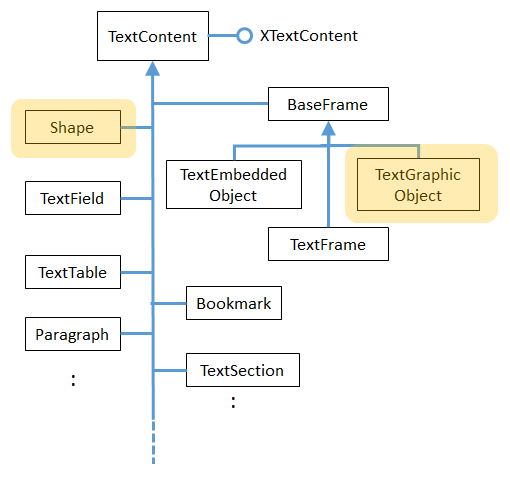

Chapter 8. Graphic Content¶
Topics
Graphics; Linked Images/Shapes
Example folders: "Text Tests" and "Utils"
Chapter 7 looked at several forms of text document content (e.g. text frames, math formulae, text fields and tables, and bookmarks), as indicated by Figure 1. However the different ways of adding graphical content (corresponding to the services highlighted in orange) are the focus of this chapter

Figure 1. The TextContent Service and Some Subclasses.
1. Linking a Graphic Object to a Document¶
Adding an image to a text document follows the same steps as other text content, as shown in Write.addImageLink():
public static void addImageLink(XTextDocument doc,
XTextCursor cursor, String fnm)
{ addImageLink(doc, cursor, fnm, 0, 0); }
// 0, 0 means use image's size as width & height
public static void addImageLink(XTextDocument doc,
XTextCursor cursor, String fnm,
int width, int height)
{ try {
// create TextContent for graphic
XTextContent tgo = Lo.createInstanceMSF(XTextContent.class,
"com.sun.star.text.TextGraphicObject");
if (tgo == null) {
System.out.println("Could not create a text graphic object");
return;
}
// set anchor and URL properties
XPropertySet props = Lo.qi( XPropertySet.class, tgo);
props.setPropertyValue("AnchorType",
TextContentAnchorType.AS_CHARACTER);
props.setPropertyValue("GraphicURL", FileIO.fnmToURL(fnm));
// optionally set the width and height
if ((width > 0) && (height > 0)) {
props.setPropertyValue("Width", width);
props.setPropertyValue("Height", height);
}
// append image to document, followed by a newline
append(cursor, tgo);
endLine(cursor);
}
catch (Exception e) {
System.out.println("Insert of \"" + fnm + "\" failed: " + e);
}
} // end of addImageLink()
The TextGraphicObject service doesn't offer a XTextGraphicObject interface, so Lo.createInstanceMSF() returns an XTextContext.
The interface is also converted to XPropertySet because several properties need to be set. The frame is anchored, and the image's filename is assigned to "GraphicURL" (after being changed into a URL).
The image's size on the page depends on the dimensions of its enclosing frame, which are set in the "Width" and "Height" properties:
props.setPropertyValue("Width", 4500); // 45 mm width
props.setPropertyValue("Height", 4000); // 40 mm height
The values are in 1/100 mm units, so 4500 is 45 mm or 4.5 cm.
If these properties aren't explicitly set then the frame size defaults to being the width and height of the image.
In more realistic code, the width and height properties would be calculated as some scale factor of the image's size, as measured in 1/100 mm units not pixels. These dimensions are available if the image file is loaded as an XGraphic object, as shown in Images.getSize100mm():
// in the Images class
public static Size getSize100mm(String imFnm)
{
XGraphic graphic = loadGraphicFile(imFnm);
if (graphic == null)
return null;
return (Size) Props.getProperty(graphic, "Size100thMM");
} // end of getSize100mm()
public static XGraphic loadGraphicFile(String imFnm)
{
// create graphics provider
XGraphicProvider gProvider = Lo.createInstanceMCF(
XGraphicProvider.class,
"com.sun.star.graphic.GraphicProvider");
if (gProvider == null) {
System.out.println("Graphic Provider could not be found");
return null;
}
// set URL property and query it for XGraphic
PropertyValue[] fileProps =
Props.makeProps("URL", FileIO.fnmToURL(imFnm));
try {
return gProvider.queryGraphic(fileProps);
}
catch(Exception e)
{ System.out.println("Could not load XGraphic from " + imFnm);
return null;
}
} // end of loadGraphicFile()
Displaying the image at a scaled size is possible by combining Images.getSize100mm() and Write.addImageLink():
Size imSize = Images.getSize100mm(imFnm);
int w = (int)Math.round(imSize.Width*1.5); // enlarge by 1.5x
int h = (int)Math.round(imSize.Height*1.5);
Write.addImageLink(doc, cursor, imFnm, w, h);
A possible drawback of Write.addImageLink() is that the document only contains a link to the image. This becomes an issue if you save the document in a format other than ".odt". In particular, when saved as a Word ".doc" file, the link is lost.
2. Adding a Graphic to a Document as a Shape¶
An alternative to inserting a graphic as a link is to treat it as a shape. Shapes will be discussed at length in Part 3, so I won't go into much detail about them here. One difference between a graphic link and shape is that shapes can be rotated.
Shapes can be created using the com.sun.star.text.Shape service, com.sun.star.drawing.Shape, or one of its subclasses, while XDrawPageSupplier.getDrawPage() accesses the shapes in a document.
The shape hierarchy is quite extensive (i.e. there are many kinds of shape), so only the parts used here are shown in Figure 2:

Figure 2. Part of the Shape Hierarchy.
In Figure 2, "(text) Shape" refers to the com.sun.star.text.Shape service, while "(drawing) Shape" is com.sun.star.drawing.Shape.
My examples use GraphicObjectShape to create a shape containing an image, and LineShape to add a line to the document.
The XShapeDescriptor interface in com.sun.star.drawing.Shape is a useful way to obtain the name of a shape service.
2.1. Creating an Image Shape¶
The BuildDoc.java example adds an image shape to the document by calling Write.addImageShape():
// code fragment in BuildDoc.java
Write.append(cursor, "Image as a shape: ");
Write.addImageShape(doc, cursor, imFnm); // image filename
Write.endParagraph(cursor);
Write.addImageShape() comes in two versions: with and without width and height arguments. A shape with no explicitly set width and height properties is rendered as a miniscule image (about 1 mm wide). Call me old-fashioned, but I want to see the graphic, so Write.addImageShape() calculates the picture's dimensions if none are supplied by the user.
Another difference between image shape and image link is how the content's "GraphicURL" property is employed. The image link version contains its URL, while the image shape's "GraphicURL" stores its bitmap as a string.
The code for Write.addImageShape():
public static void addImageShape(XTextDocument doc,
XTextCursor cursor, String fnm)
{ addImageShape(doc, cursor, fnm, 0, 0); }
/* 0, 0 means that the method must calculate
the image's size */
public static void addImageShape(XTextDocument doc,
XTextCursor cursor, String fnm, int width, int height)
{
Size imSize;
if ((width > 0) && (height > 0))
imSize = new Size(width, height);
else {
imSize = Images.getSize100mm(fnm);
if (imSize == null)
return;
}
try {
// create TextContent for the graphic shape
XTextContent gos = Lo.createInstanceMSF(
XTextContent.class,
"com.sun.star.drawing.GraphicObjectShape");
if (gos == null) {
System.out.println("Could not create a graphic shape");
return;
}
// store the image's bitmap in the "GraphicURL" property
String bitmap = Images.getBitmap(fnm);
Props.setProperty(gos, "GraphicURL", bitmap);
// set the shape's size
XShape xDrawShape = Lo.qi(XShape.class, gos);
xDrawShape.setSize(imSize); // must be set, or image is tiny
// insert image shape into the document, followed by newline
append(cursor, gos);
endLine(cursor);
}
catch(Exception e) {
System.out.println("Insert of \"" + fnm + "\" failed: " + e);
}
} // end of addImageShape()
The image's size is calculated using Images.getSize100mm() if the user doesn't supply a width and height, and is used towards the end of the method.
An image shape is created using the GraphicObjectShape service, and its XTextContent interface is converted to XPropertySet for assigning its properties, and to XShape for setting its size (see Figure 2). XShape includes a setSize() method.
Images.getBitmap() converts the graphic into a bitmap string.
// in the Images utility class
public static String getBitmap(String fnm)
{
try {
// create a BitmapTable service and named container
XNameContainer bitmapContainer =
Lo.createInstanceMSF(XNameContainer.class,
"com.sun.star.drawing.BitmapTable");
// insert image into container
if (!FileIO.isOpenable(fnm))
return null;
String picURL = FileIO.fnmToURL(fnm);
if (picURL == null)
return null;
bitmapContainer.insertByName(fnm, picURL);
// use the filename as the name of the bitmap
// return the bitmap as a string
return (String) bitmapContainer.getByName(fnm);
}
catch(Exception e)
{ System.out.println("Could not create bitmap for " + fnm);
return null;
}
} // end of getBitmap()
getBitmap() uses a BitmapTable service to store the image's file in an XNameContainer. When the bitmap value is retrieved from the container, it can be cast to a string.
A named container requires a name be assigned to the bitmap value; I use the image's filename, but any unique string would do.
2.2. Adding Other Graphics to the Document¶
The graphic text content can be any subclass of Shape. In the last section I created a GraphicObjectShape service, and accessed its XTextContent interface:
XTextContent gos = Lo.createInstanceMSF(XTextContent.class,
"com.sun.star.drawing.GraphicObjectShape");
In this section I'll use LineShape:
XTextContent ls = Lo.createInstanceMSF(XTextContent.class,
"com.sun.star.drawing.LineShape");
The aim is to draw an horizontal line in the document, to act as a divider between paragraphs. The line will be half-a-page wide and centered, like the one in Figure 3
Figure 3. A Graphical Line Divider.
The difficult part is calculating the width of the line, which should only extend across half the writing width. This isn't the same as the page width because it doesn't include the left and right margins.
The page and margin dimensions are accessible through the "Standard" page style, as implemented in Write.getPageTextWidth():
public static int getPageTextWidth(XTextDocument textDoc)
// get the page's writing width
{
// access the "standard" style in the pages style family
XPropertySet props =
Info.getStyleProps(textDoc, "PageStyles", "Standard");
if (props == null) {
System.out.println("Could not access the standard page style");
return 0;
}
// lookup the page and margin widths
try {
int width = ((Integer)props.getPropertyValue(
"Width")).intValue();
int leftMargin = ((Integer)props.getPropertyValue(
"LeftMargin")).intValue();
int rightMargin = ((Integer)props.getPropertyValue(
"RightMargin")).intValue();
return (width - (leftMargin + rightMargin)); // writing width
}
catch (Exception e)
{ System.out.println("Could not access page dimensions: " + e);
return 0;
}
} // end of getPageTextWidth()
getPageTextWidth() returns the writing width in 1/100 mm units, which is scaled, then passed to Write.addLineDivider():
// code fragment in BuildDoc,java
int textWidth = Write.getPageTextWidth(doc);
Write.addLineDivider(cursor, (int)Math.round(textWidth*0.5) );
// scale width by 0.5
addLineDivider() creates a LineShape service with an XTextContent interface (see Figure 2). This is converted to XShape so its setSize() method can be passed the line width:
public static void addLineDivider(XTextCursor cursor,
int lineWidth)
// in the Writer class
{ try {
// create TextContent for a line
XTextContent ls = Lo.createInstanceMSF(
XTextContent.class,
"com.sun.star.drawing.LineShape");
if (ls == null) {
System.out.println("Could not create a line shape");
return;
}
// set line size
XShape lineShape = Lo.qi(XShape.class, ls);
lineShape.setSize( new Size(lineWidth, 0));
endParagraph(cursor);
append(cursor, ls); // put line in its own paragraph
endParagraph(cursor);
// center the line paragraph
stylePrevParagraph(cursor, "ParaAdjust",
com.sun.star.style.ParagraphAdjust.CENTER);
endParagraph(cursor);
}
catch(Exception e)
{ System.out.println("Insertion of graphic line failed"); }
} // end of addLineDivider()
The centering of the line is achieved by placing the shape in its own paragraph, then using Write.stylePrevParagraph() to center it.
3. Accessing Linked Images and Shapes¶
The outcome of running BuildDoc.java is a "build.odt" file containing four graphics – two are linked images, one is an image shape, and the other a line shape.
The ExtractGraphics.java example extracts linked graphics from a document, saving them as PNG files. It also prints information about the shapes in the document.
When ExtractGraphics is passed "build.odt", the following is output:
Num. of text graphics: 2
Saving graphic in graphics1.png
Image size in pixels: 319 x 274
Saving graphic in graphics2.png
Image size in pixels: 319 x 274
Num. of draw shapes: 3
Shape service: FrameShape; z-order: 0
Shape service: com.sun.star.drawing.GraphicObjectShape; z-order: 1
Shape service: com.sun.star.drawing.LineShape; z-order: 2
A user who looked at "build.odt" for themselves might say that it contains three images not the two reported by ExtractGraphics. Why the discrepancy? ExtractGraphics.java only saves linked graphics, and only two were added by Write.addImageLink(). The other image was inserted using Write.addImageShape() which creates an image shape.
The number of shapes reported by ExtractGraphics.java may also confuse the user – why are there three rather than two? The only shapes added to the document were an image and a line.
The names of the services gives a clue: the second and third shapes are the expected GraphicObjectShape and LineShape, but the first is a text frame (FrameShape) added by Write.addTextFrame(). Although this frame is an instance of the TextFrame service, it's reported as a FrameShape. That's a bit mysterious because there's no FrameShape service in the Office documentation.
The main() function of ExtractGraphics.java:
public static void main(String[] args)
{
XComponentLoader loader = Lo.loadOffice();
XTextDocument textDoc = Write.openDoc(args[0], loader);
if (textDoc == null) {
System.out.println("Could not open " + args[0]);
Lo.closeOffice();
return;
}
// save text graphics to files
ArrayList<XGraphic> pics = Write.getTextGraphics(textDoc);
if (pics == null)
return;
System.out.println("\nNum. of text graphics: " + pics.size());
int i = 1;
for(XGraphic pic : pics) {
Images.saveGraphic(pic, "graphics" + i + ".png", "png");
Size sz = (Size) Props.getProperty(pic, "SizePixel");
System.out.println("Image size in pixels: " +
sz.Width + " x " + sz.Height);
i++;
}
System.out.println();
// report on shapes in the document
XDrawPage drawPage = Write.getShapes(textDoc);
ArrayList<XShape> shapes = Draw.getShapes(drawPage);
if (shapes != null)
System.out.println("\nNum. of draw shapes: " + shapes.size());
for(XShape shape : shapes)
Draw.printShapeInfo(shape);
System.out.println();
Lo.closeDoc(textDoc);
Lo.closeOffice();
} // end of main()
The first block of code saves text graphic objects as PNGs, and the second reports on shapes.
3.1. Finding and Saving Text Graphics in a Document¶
Write.getTextGraphics() returns a list of XGraphic objects: first it retrieves a collection of the graphic links in the document, then iterates through them creating an XGraphic object for each one:
// in the Write class
public static ArrayList<XGraphic> getTextGraphics(
XTextDocument textDoc)
{ // get all the graphic links
XNameAccess xNameAccess = getGraphicLinks(textDoc);
if (xNameAccess == null)
return null;
String[] names = xNameAccess.getElementNames();
System.out.println("Number of graphics found: " + names.length);
// build a list of XGraphic objects, one for each link
ArrayList<XGraphic> pics = new ArrayList<XGraphic>();
for (int i = 0; i < names.length; i++) {
Object graphicLink = null;
try {
graphicLink = xNameAccess.getByName(names[i]);
}
catch(com.sun.star.uno.Exception e) {}
if (graphicLink == null)
System.out.println("No graphic found for " + names[i]);
else {
XGraphic xGraphic = Images.loadGraphicLink(graphicLink);
if (xGraphic != null)
pics.add(xGraphic);
else
System.out.println(names[i] + " could not be accessed");
}
}
return pics;
} // end of getTextGraphics()
Graphic objects are accessed with XTextGraphicObjectsSupplier, as implemented by Write.getGraphicLinks():
// in the Write class
public static XNameAccess getGraphicLinks(XComponent doc)
{
XTextGraphicObjectsSupplier imsSupplier =
Lo.qi(XTextGraphicObjectsSupplier.class, doc);
if (imsSupplier == null) {
System.out.println("Supplier could not be created");
return null;
}
XNameAccess xNameAccess = imsSupplier.getGraphicObjects();
if (xNameAccess == null) {
System.out.println("Name access to graphics not possible");
return null;
}
if (!xNameAccess.hasElements()) {
System.out.println("No graphics elements found");
return null;
}
return xNameAccess;
} // end of getGraphicLinks()
Back in Write.getTextGraphics, each graphic is loaded by calling Images.loadGraphicLink(). It loads an image from the URL associated with a link:
// in the Images class
public static XGraphic loadGraphicLink(Object graphicLink)
{
// create graphic provider
XGraphicProvider gProvider = Lo.createInstanceMCF(
XGraphicProvider.class,
"com.sun.star.graphic.GraphicProvider");
if (gProvider == null) {
System.out.println("Graphic Provider could not be found");
return null;
}
// set up URL property then load as an XGraphic
try {
XPropertySet xprops = Lo.qi(XPropertySet.class, graphicLink);
PropertyValue[] gProps = Props.makeProps("URL",
(String) xprops.getPropertyValue("GraphicURL") );
return gProvider.queryGraphic(gProps);
}
catch(Exception e)
{ System.out.println("Unable to retrieve graphic");
return null;
}
} // end of loadGraphicLink()
Note that the XGraphic is not extracted from the document but loaded from a URL.
Back in ExtractGraphics.java, the XGraphic objects are saved as PNG files, and their pixel sizes reported:
private static void savePics(XTextDocument textDoc)
// method in ExtractGraphics.java
{
ArrayList<XGraphic> pics = Write.getTextGraphics(textDoc);
if (pics == null)
return;
System.out.println("No. of graphic retrieved: " + pics.size());
int i = 1;
for(XGraphic pic : pics) {
Images.saveGraphic(pic, "graphics" + i + ".png", "png");
Size sz = (Size) Props.getProperty(pic, "SizePixel");
System.out.println("Image Pixel size: " +
sz.Width + " x " + sz.Height);
i++;
}
} // end of savePics()
Images.saveGraphic() utilizes the graphic provider's XGraphicProvider.storeGraphic() method:
// in XGraphicProvider
void storeGraphic(XGraphic g, PropertyValue[] props)
{ ... }
Its second argument is an array of PropertyValue objects, not a PropertySet. My Props.java utility class provides several functions for creating PropertyValue instances, which are a variant of the {name=value} pair idea, but with extra data fields. One such function is:
// in Props.java
PropertyValue[] makeProps(String[] nms, Object[] vals)
{ ... }
It's passed an array of names and values, which are paired up as PropertyValue objects, and returned in an array.
In saveGraphic(), these methods are used like so:
XGraphicProvider gProvider = Lo.createInstanceMCF(
XGraphicProvider.class,
"com.sun.star.graphic.GraphicProvider");
// set up properties for storing the graphic
PropertyValue[] props = Props.makeProps(
"URL", FileIO.fnmToURL(fnm),
"MimeType", "image/" + imFormat);
gProvider.storeGraphic(pic, props);
The idea is to call XGraphicProvider.saveGraphics() with the "URL" and "MimeType" properties set – the URL is for the image file, and the mimetype is an image type (e.g. "image/png").
saveGraphic() is coded as:
public static void saveGraphic(XGraphic pic,
String fnm, String imFormat)
{ // create graphic provider
XGraphicProvider gProvider = Lo.createInstanceMCF(
XGraphicProvider.class,
"com.sun.star.graphic.GraphicProvider");
if (gProvider == null) {
System.out.println("Graphic Provider could not be found");
return;
}
if (pic == null) {
System.out.println("Supplied image is null");
return;
}
// set up properties for storing the graphic
PropertyValue[] pngProps = Props.makeProps(
"URL", FileIO.fnmToURL(fnm),
"MimeType", "image/" + imFormat);
try {
gProvider.storeGraphic(pic, pngProps);
}
catch(com.sun.star.uno.Exception e)
{ System.out.println("Unable to save graphic"); }
} // end of saveGraphic()
Other possible image MIME types include "gif", "jpeg", "wmf", and "bmp". For instance, this call will save the image as a GIF: Images.saveGraphic(pic, "graphics" + i + ".gif", "gif"); The printed output from saveGraphic() contains another surprise:
Num. of text graphics: 2
Saving graphic in graphics1.png
Image size in pixels: 319 x 274
Saving graphic in graphics2.png
Image size in pixels: 319 x 274
The two saved graphics are the same size, but the second image is bigger inside the document. The discrepancy is because the rendering of the image in the document is bigger, scaled up to fit the enclosing frame; the original image is unchanged.
3.2. Finding the Shapes in a Document¶
The second block of code in ExtractGraphics reports on the shapes found in the document. The relevant code fragment is:
// code fragment from ExtractGraphics.java
XDrawPage drawPage = Write.getShapes(textDoc);
ArrayList<XShape> shapes = Draw.getShapes(drawPage);
if (shapes != null)
System.out.println("\nNum. of draw shapes: " + shapes.size());
for(XShape shape : shapes)
Draw.printShapeInfo(shape);
Shapes are accessed with the XDrawPageSupplier.getDrawPage() method, which returns a single XDrawPage:
public static XDrawPage getShapes(XTextDocument textDoc)
{
XDrawPageSupplier drawPageSupplier = Lo.qi(
XDrawPageSupplier.class, textDoc);
if (drawPageSupplier == null) {
System.out.println("Draw page supplier could not be created");
return null;
}
return drawPageSupplier.getDrawPage();
} // end of getShapes()
XDrawPage's usual role is to represent the canvas in Office's Draw, or a slide in Impress, and so plays an important role in Part 3. Several support functions inside that part's Draw utility class will be used here.
XDrawPageSupplier.getDrawPage() returns a single XDrawPage for the entire text document. That doesn't mean that the shapes all have to occur on a single text page, but rather that all the shapes spread across multiple text pages are collected into a single draw page.
XDrawPage inherits from XShapes and XindexAccess, as shown in Figure 4, which means that a page can be viewed as a indexed collection of shapes.

Figure 4. Partial Inheritance Hierarchy for XDrawPage.
Draw.getShapes() uses this idea to iterate through the draw page and store the shapes in a list:
// in the Draw class
public static ArrayList<XShape> getShapes(XDrawPage dp)
{
if (dp == null) {
System.out.println("Draw page is null");
return null;
}
if (dp.getCount() == 0) {
System.out.println("Draw page does not contain any shapes");
return null;
}
// create a shapes list
ArrayList<XShape> xShapesList = new ArrayList<XShape>();
try {
for(int j=0; j < dp.getCount(); j++)
xShapesList.add( Lo.qi(XShape.class, dp.getByIndex(j)));
}
catch(Exception e)
{ System.out.println("Extraction error in draw page"); }
return xShapesList;
} // end of getShapes()
XShape is part of the Shape service, which contains many shape-related properties.
XShape inherits XShapeDescriptor, which includes a getShapeType() method for returning the shape type as a string. Figure 5 summarizes these details.

Figure 5. The Shape Service and XShape Interface
Draw.printShapeInfo() accesses the Shape service associated with an XShape reference, and prints its "XOrder" property. This number indicates the order that the shapes were added to the document.
public static void printShapeInfo(XShape xShape)
{
Integer nZOrder = (Integer) Props.getProperty(xShape, "ZOrder");
System.out.println(" Shape service: " + xShape.getShapeType() +
"; z-order: " + nZOrder);
}
printShapeInfo() also calls the inherited XShapeDescriptor.getShapeType() method to report the shape's service name.
3.3. Another Way of Accessing Drawing Shapes¶
The XDrawPageSupplier documentation states that this interface is deprecated, although what's meant to replace it isn't clear. My guess is com.sun.star.text.XTextShapesSupplier, although I wasn't able to get it to supply anything. For example, the following always reports that the supplier is null:
XTextShapesSupplier shpsSupplier = Lo.qi(
XTextShapesSupplier.class, textDoc);
if (shpsSupplier == null)
System.out.println("Could not obtain text shapes supplier");
else
System.out.println("Num. of text shapes: " +
shpsSupplier.getShapes().getCount());